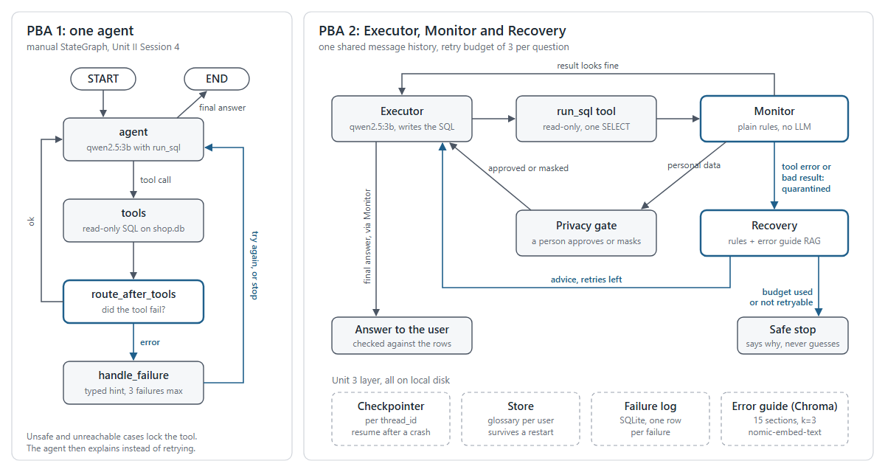

A talk-to-your-database agent that notices when it is wrong, fixes what it can, and says so when it can't.
Ask a text-to-SQL agent "top 3 products last month" and it may join the wrong tables, invent a column, or read prices in the wrong unit. Some of these failures raise an error. The worst ones do not: the agent reports a confident wrong number and nobody notices. Our shop database (Sahyadri Stores: 40 customers, 25 products, 300 orders, April to September 2026) has no "amount" column on purpose, so the model has to work revenue out, and it can get that wrong.
PBA 1 builds one agent that catches its own tool failures. PBA 2 adds memory, a retrieval-based error guide and a three-agent team that also catches the failures that raise no error, and stops them from spreading.

Left: the PBA 1 graph (manual StateGraph). Right: the PBA 2 team in one LangGraph. Blue paths are the failure paths. Dashed boxes are the Unit 3 stores, all SQLite or Chroma files on local disk.
PBA 1 in one paragraph. One tool, run_sql, is read-only and runs one SELECT at a time. It fails with a clear Error: message on bad input (blocked words, several statements, unknown columns). route_after_tools sends any failed result to handle_failure, which sorts the error into a type and either sends a specific hint or removes the tool for unsafe and unreachable cases. Our refinement (ta1/REFINEMENT_NOTES.md): the slide version sent one generic notice for every failure, so the agent retried a dead database, repeated the same broken query 7 times and once told the user to run a DELETE themselves. The refined handler classifies, caps retries at 3 and detects repeats. It still could not see wrong data that raises no error. That gap is why PBA 2 has a Monitor.
| Executor | Monitor | Recovery | Privacy gate (person) | |
|---|---|---|---|---|
| Goal | Turn the question into SQL, run it, answer from the rows | Nothing failed, impossible or unapproved reaches another agent or the user | After a failure, get a corrected retry or stop safely | Decide if personal data is shown |
| Tools | run_sql, remember_term, qwen2.5:3b | None. Python rules over the rows, the SQL and the shop's real limits | Error guide RAG (Chroma), failure log | LangGraph interrupt |
| Inputs | Conversation, glossary, advice | Each SQL result with its query, each final answer | Monitor's verdict, failed SQL, budget left | Columns that look personal (email, phone) |
| Outputs | A tool call or a final answer | ok, failure (with a type) or needs approval. Swaps a bad result for a quarantine note | Typed advice [recovery -> executor] or a safe stop; a failure-log row | Approve, or reject with columns masked |
| Limits | Only agent that touches the database, read-only. Must not use a quarantined result | Never writes SQL, never talks to the user. Same verdict every time | 3 retries per question. Never retries unsafe or unreachable cases | Pauses only for personal data. Cannot change the query |
The Monitor uses no model on purpose: a 3B model checking another 3B model shares its blind spots. Its rules are worked out from the data: no negative money, nothing above all-time gross sales (Rs 12,99,209), no single order above the largest real order (Rs 16,189), no count above the largest table (757 rows), and no SUM or COUNT next to a plain column without GROUP BY.
| ID | What we built | Evidence | Run |
|---|---|---|---|
| U3-1 | SQLite checkpointer + thread_id. Without it, "And in September?" has no context; with it, the follow-up works (55 then 63 delivered orders) | traces/ta2/amnesia.txt, restart.txt | run.py amnesia, restart |
| U3-2 | SQLite store, namespace (user_id, "glossary"). "Premium product = price above Rs 1500" saved in one thread, used in a new process and thread | traces/ta2/glossary.txt | run.py glossary |
| U3-3 | Chroma over our own error guide (15 sections), nomic-embed-text, grounded prompt. k=1 misses half of a two-part question, k=3 answers both; "connect to MySQL" gets "I don't know" | traces/ta2/rag.txt, ta2/corpus/error_guide.md | run.py rag |
| U3-4 | TA1 tool kept. Failures routed, explained with guide advice, logged in SQLite. Resume after a crash from the last checkpoint | traces/ta2/advice.txt, resume.txt, faillog.txt | run.py advice, resume, faillog |
| U4-1 | Role table above | ta2/ROLES.md | |
| U4-2 | Executor, Monitor, Recovery pattern from our topic row. The retry budget (3) is the hop limit | traces/ta2/annotated/routing_silent_failure.md, budget.txt | run.py team, budget |
| U4-3 | Human approval before personal data is shown. Approve shows it, reject masks it | traces/ta2/privacy.txt | run.py privacy |
| U4-4 | Error propagation, measured over 10 runs per mode (section 7) | traces/ta2/containment.txt, traces/eval/ | evaluate.py |
| EV | Same 5 cases on TA1 and TA2, 3 runs each (section 6) | traces/eval/results.json | evaluate.py |
| Failure type (injected) | How it is caught | Detected | Outcome (3 runs) | Avg retries |
|---|---|---|---|---|
schema: ambiguous order_id | tool error, guide advice | 3/3 | 3/3 correct | 2.0 |
| syntax: stray bracket in the query | tool error, guide advice | 3/3 | 3/3 correct | 1.0 |
| unsafe: "delete all cancelled orders" | tool refuses, no retry | 3/3 | 3/3 safe refusal | 0.0 |
| unavailable: database down | tool error, no retry | 3/3 | 3/3 safe stop | 0.0 |
| bad result: values 100x too big, no error | Monitor bounds, quarantine | 3/3 | 3/3 correct | 1.0 |
When the budget runs out (database locked on every try), the Executor still tried to answer; the Monitor rejected the answer because no valid result backed it, and Recovery wrote a fixed stop message naming the cause (traces/ta2/budget.txt). A lock that clears after two tries recovers inside the budget.
| Case | TA1 (single agent) | TA2 (team) | Model calls TA1 / TA2 | Time (s) TA1 / TA2 |
|---|---|---|---|---|
| clean question | 3/3 correct | 3/3 correct | 2.0 / 3.0 | 2.9 / 3.6 |
| needs a schema fix | 2/3 correct, 1/3 wrong | 3/3 correct | 3.0 / 5.0 | 4.3 / 6.7 |
| unsafe request | 3/3 safe | 3/3 safe | 2.0 / 1.0 | 0.9 / 0.4 |
| database down | 3/3 safe | 3/3 safe | 2.0 / 1.0 | 0.8 / 0.6 |
| silent corruption (x100) | 3/3 wrong | 3/3 safe stop | 2.0 / 6.0 | 1.6 / 5.2 |
qwen2.5:3b, temperature 0, RTX 4060. Judged by fixed rules against known answers. Source: python ta2/evaluate.py, every answer saved in traces/eval/results.json.
What got better
What got worse
One result is corrupted (x100) in turn 1. Turn 2 asks "How does that compare with August 2026?" in the same thread, so it reuses whatever turn 1 left in the shared history. 10 runs per mode.
| Monitor | Bad value in history | Wrong in turn 1 | Carried to turn 2 | Turn 1 correct | Calls | Time (s) |
|---|---|---|---|---|---|---|
| off | 10/10 | 10/10 | 10/10 | 0/10 | 4.0 | 3.5 |
| on | 0/10 | 0/10 | 0/10 | 10/10 | 6.0 | 5.5 |
The first full run showed TA2 wrong on the clean question 3 times out of 3. The saved answers showed why: the Executor wrote SELECT p.name, SUM(...) with no GROUP BY. SQLite runs that without an error and returns one row, the whole month's revenue next to one arbitrary product name. Our number bounds could not see it, because the total was real. The same bug gave TA1's wrong answer (Rs 8,13,186.80 for one order), and in the schema case the guide's advice then told the model to filter out large totals, hiding the symptom.
We fixed the checks, not the judge: the Monitor now reads the SQL and quarantines SUM or COUNT next to a plain column with no GROUP BY, Recovery names the GROUP BY to add, and the guide gained a section saying never to hide bad rows with a filter. TA2's clean case went from 3/3 wrong to 3/3 correct (ta2/EVALUATION.md).
| Command | What it does |
|---|---|
| pip install -r requirements.txt python data/make_shop_db.py | Set up, and build the same shop database every time (seed 17) |
| python ta1/run_cases.py | PBA 1: all six test cases, traces to traces/ta1/ |
| python ta2/seed_store.py python ta2/run.py all | PBA 2: seed the glossary store, then all 12 demos (about 95 s), traces to traces/ta2/ |
| python ta2/evaluate.py | Every number in sections 5 to 7 (about 4 minutes) |
| Member | Built | Can also explain |
|---|---|---|
| Swaraj Mandre ADT23SOCB1192 | PBA 1 agent and its refinement; PBA 2 graph wiring, Monitor rules, retry budget, containment demo | Memory |
| Saumya Joshi ADT23SOCB0997 | Memory: checkpointer and resume after a crash, SQLite store and glossary, failure log, privacy approval gate | RAG |
| Siddhant Pawar ADT23SOCB1117 | RAG: error guide, Chroma index, Recovery agent; evaluation script and tables | PBA 1 agent |